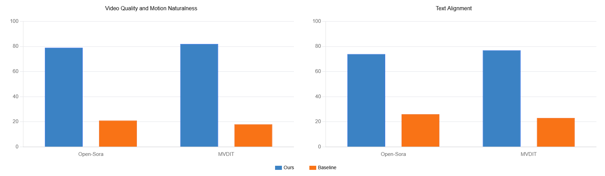

Ours vs. Baseline
On canonical motion prompts, the baseline often stalls, reverses direction, or changes scale abruptly. Our frequency-domain loss encourages coherent displacement and smoother apparent motion.


Current video diffusion models generate visually compelling content but often violate basic laws of physics, producing subtle artifacts like rubber-sheet deformations and inconsistent object motion.
We introduce a frequency-domain physics prior that improves motion plausibility without modifying model architectures. Our method decomposes common rigid motions (translation, rotation, scaling) into lightweight spectral losses, requiring only 2.7% of frequency coefficients while preserving more than 97% of spectral energy.
Applied to Open-Sora, MVDIT, and Hunyuan, our approach improves motion accuracy and action recognition on OpenVID-1M while maintaining visual quality. User studies show 74--83% preference for our physics-enhanced videos, indicating that simple global spectral cues are an effective drop-in regularizer for physically plausible motion in video diffusion.
From each generated video, we compute a low-pass 3D Fourier representation and evaluate spectral losses that correspond to translation, rotation, and scaling. The losses are adaptively combined into a motion-aware training signal.

On canonical motion prompts, the baseline often stalls, reverses direction, or changes scale abruptly. Our frequency-domain loss encourages coherent displacement and smoother apparent motion.
In two-alternative forced choice studies, users consistently preferred our videos for visual quality, motion naturalness, and text-video alignment.

Our loss improves the temporal evolution of objects and scene-level motion while preserving the generated appearance.
Ours

Baseline
Across Open-Sora, MVDIT, and Hunyuan, the physics-guided loss improves temporal coherence, motion quality, and text alignment.
| Metric | Open-Sora Base | Open-Sora Ours | MVDIT Base | MVDIT Ours | Hunyuan Base | Hunyuan Ours |
|---|---|---|---|---|---|---|
| VQA_A ↑ | 65.15 | 69.20 | 66.65 | 69.30 | 73.85 | 74.79 |
| Warping Error ↓ | 0.0089 | 0.0056 | 0.0080 | 0.0062 | 0.0024 | 0.0016 |
| Temporal Consistency ↑ | 61.45 | 63.82 | 62.21 | 64.73 | 63.65 | 66.03 |
| Action Recognition ↑ | 60.77 | 69.71 | 62.34 | 69.70 | 68.93 | 73.15 |
| Motion Accuracy ↑ | 44.00 | 49.00 | 44.00 | 51.00 | 56.00 | 59.00 |
| Text-Video Alignment ↑ | 54.02 | 61.05 | 61.04 | 63.62 | 59.60 | 65.34 |
The method is architecture-agnostic, uses only a compact low-pass frequency subset, and can be inserted as a training-time regularizer for video diffusion backbones.
The page source is adapted from the official Nerfies project page.
@misc{xue2026physicsguidedmotionloss,
title = {Physics-Guided Motion Loss for Video Generation Model},
author = {Xue, Bowen and Guarnera, Giuseppe Claudio and Zhao, Shuang and Montazeri, Zahra},
year = {2026},
note = {Project page}
}